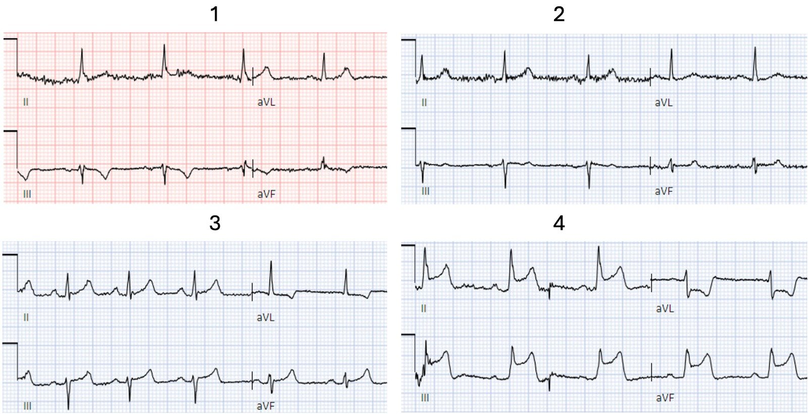
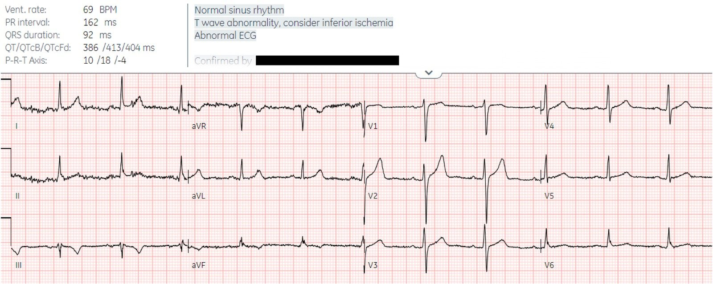
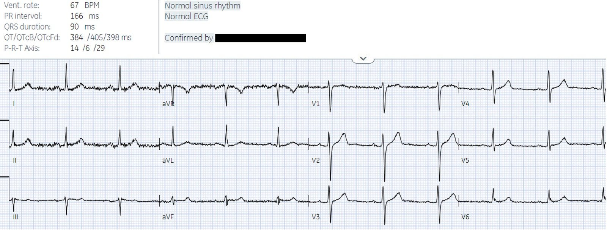
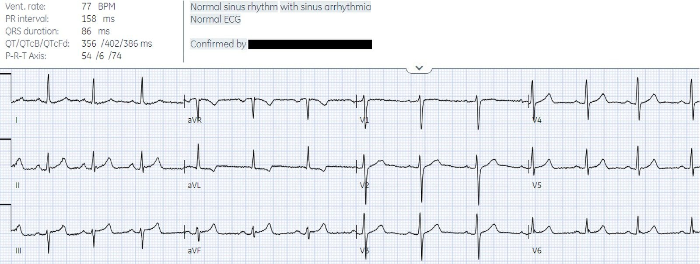
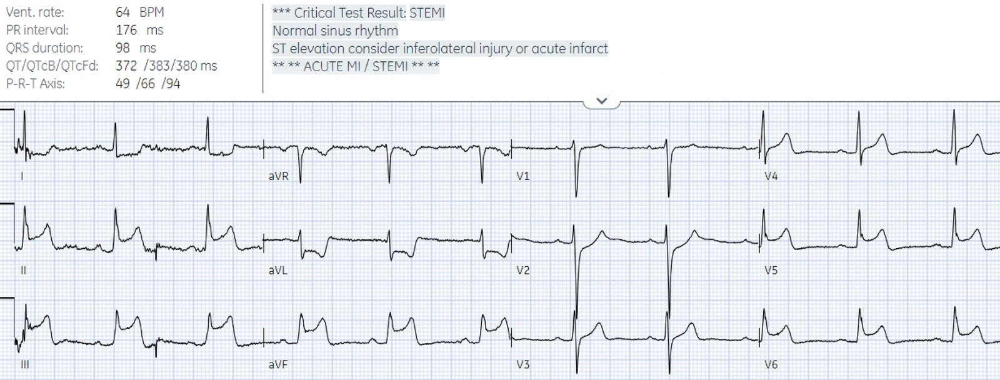
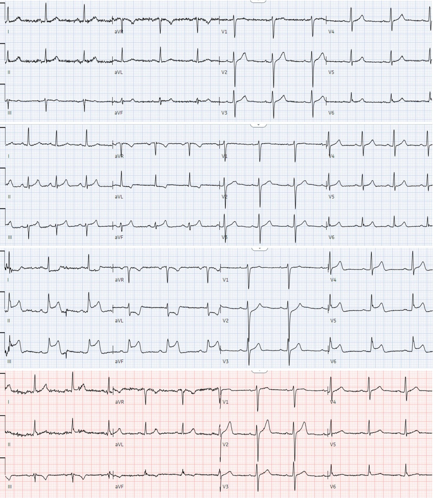
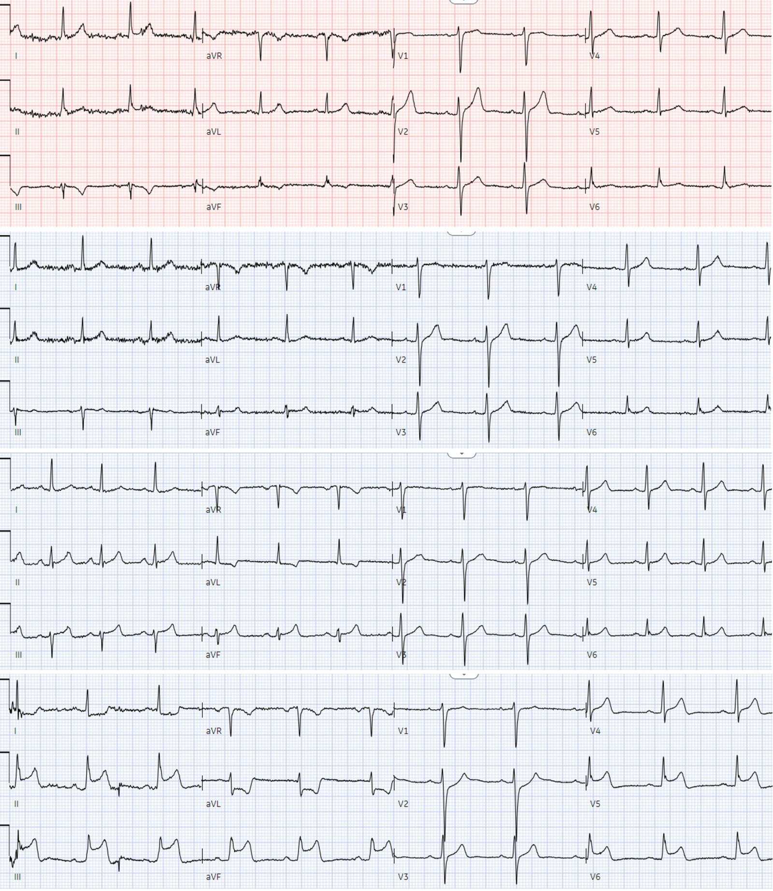
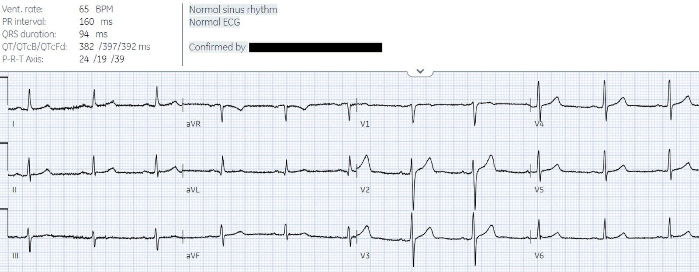

07/06/2024 — Đau ngực với các điện tâm đồ liên tiếp – bạn có đoán được trình tự?
Bản dịch tiếng Việt của bài "Chest pain with serial ECGs – can you guess the sequence?" – Dr. Smith’s ECG Blog. Giữ nguyên toàn bộ 9 hình ảnh của bản gốc.
Tác giả: Jesse McLaren
Một bệnh nhân 45 tuổi đến khám vì đau ngực từng cơn trong 24
giờ. Dưới đây là các điện tâm đồ liên tiếp, tập trung vào các
chuyển đạo dưới và aVL. Bạn có đoán được trình tự của chúng không?


Trước hết, diễn giải từng điện tâm đồriêng lẻ là gì?
#1


Có sóng T đảo ngược ở
III/aVF và sóng T cao hơn ở aVL và V2. Nếu đứng riêng thì hình ảnh này không đặc hiệu, nhưng
trong bối cảnh phù hợp thì đây có thể là tắc nhánh chéo (nếu đang đau ngực) hoặc
tái tưới máu vùng dưới-sau (nếu đau ngực đã hết).
#2


Điện tâm đồ bình thường
#3.


Có sóng T đảo ngược ngược hướng
ở aVL, soi gương với các sóng T ở chuyển đạo dưới vốn cao
so với QRS nhưng không đầy đặn. Nếu đứng riêng thì hình ảnh này không đặc hiệu, nhưng trong
bối cảnh phù hợp thì đây có thể là OMI thành dưới (nếu đang đau ngực) hoặc vùng bên cao đã tái tưới máu
(nếu đau ngực đã hết).
#4.


OMI STEMI dương tính (STEMI(+)OMI) dưới-sau-bên rõ ràng, bất kể bối cảnh
Giờ hãy sắp xếp chúng theo thứ tự:trình tự là gì?
Khả năng cao nhất sẽ là #2)
ban đầu bình thường, rồi #3) OMI kín đáo, rồi #4) STEMI rõ ràng, và sau đó #1)
tái tưới máu:


Nói cách khác, bệnh nhân có
điện tâm đồ ban đầu bình thường bị tắc động mạch vành cấp, với các điện tâm đồ
tiến triển từ kín đáo đến rõ ràng, rồi tái tưới máu sau chụp mạch. Nhưng
không phải lúc nào cũng như vậy.
Giờ hãy xem trình tự thực tế,có thêm bối cảnh lâm sàng, và xem bệnh nhân đã đượcxử trí thế nào:
Bệnh nhân được đội cấp cứu ngoài viện (EMS) cho dùng aspirin
và đến khu phân loại trong tình trạng hết đau (điện tâm đồ #1). Nhưng 90 phút sau, troponin
trả về 70ng/L (bình thường <26 ở nam và <16 ở nữ), và một điện tâm đồ
ghi lại được thực hiện (điện tâm đồ #2) vì đau ngực tái phát. Bệnh nhân được dùng nitro nhưng
vẫn đau, và điện tâm đồ được ghi lại 10 phút sau (điện tâm đồ #3). Bệnh nhân
được dùng thêm nitro, nhưng vẫn tiếp tục đau, và một điện tâm đồ nữa được ghi chỉ 6
phút sau (điện tâm đồ #4).


Như vậy bệnh nhân nhập viện khi đã
tái tưới máu tự phát (điện tâm đồ #1). Khi đau tái phát, điện tâm đồ trở về bình thường (điện tâm đồ #2),
nhưng đây là giả bình thường hóa: động mạch vành đã tự phát
tắc lại, và sóng T đang trên đà cao lên. Chỉ 10 phút sau,
điện tâm đồ ghi lại cho thấy OMI kín đáo (điện tâm đồ #3), với sóng T cao dần và ST chênh xuống soi gương ở
aVL. Khi xem từng điện tâm đồ riêng lẻ và không có bối cảnh lâm sàng, Queen
of Hearts đã đọc 3 điện tâm đồ đầu tiên là ‘không phải OMI’. Nhưng khi xem theo trình tự và với
bối cảnh lâm sàng là đau ngực đã hết rồi tái phát và kháng trị,
các điện tâm đồ cho thấy tái tưới máu tự phát kín đáo tiến triển thành tắc lại. Với
các điện tâm đồ liên tiếp đều ‘STEMI âm tính’, bác sĩ đã có thể chờ
các xét nghiệm troponin liên tiếp hoặc chuyển bệnh nhân như một ca “non-STEMI”. Nhưng vì
vẫn còn đau dù đã dùng nitro và có thay đổi điện tâm đồ kín đáo mang tính động, điện tâm đồ thứ tư đã được ghi lại
chỉ 6 phút sau, cho thấy OMI STEMI dương tính rõ ràng (STEMI(+)OMI) (điện tâm đồ #4), và phòng thông tim (cath lab) đã được
kích hoạt.
Kết cục và chẩn đoán cuối cùng là gì?
Đến lúc chụp mạch vành 20
phút sau, RCA đã lại tái tưới máu tự phát: hẹp 90%
và có dòng chảy TIMI 3 bình thường. Bệnh nhân được ghi điện tâm đồ thứ 5 sau
chụp mạch, kết quả bình thường (lần này là bình thường hóa thực sự, không phải
giả bình thường hóa):


Troponin sau thông tim là 300ng/L nhưng
không được xét nghiệm lại sau đó. Không có điện tâm đồ theo dõi nào, mà lẽ ra sẽ cho thấy sóng T đảo ngược (TWI) do tái tưới máu vùng dưới-sau
giống như điện tâm đồ đầu tiên.
Chẩn đoán ra viện là STEMI
dựa trên điện tâm đồ STEMI dương tính và việc kích hoạt báo động STEMI (Code STEMI), với tổn thương thủ phạm
trên phim chụp mạch. Đây là một trong 20% ca STEMI dương tính thật có động mạch
thông và dòng chảy bình thường vào thời điểm chụp mạch, cho thấy mô hình STEMI
không đòi hỏi động mạch phải tắc hoàn toàn khi chụp mạch.
Thế nhưng
hơn một phần tư số ca ‘non-STEMI’ có động mạch vành bị tắc khi chụp mạch
muộn, mà vẫn ra viện với chẩn đoán ‘non-STEMI’. Vì vậy
cả tiêu chuẩn STEMI trên điện tâm đồ lẫn kết quả chụp mạch, nếu đứng riêng, đều không đủ để
xác định bệnh lý tắc động mạch vành cấp. Trong khi đó, mô hình OMI
kết hợp điện tâm đồ, troponin, siêu âm tim và kết quả chụp mạch để nắm bắt
bản chất động của quá trình tắc/tái tưới máu.
Nếu nhồi máu cơ tim cấp là một bộ phim, thìchúng ta đang xem phim gì?
Điện tâm đồ là những ảnh chụp nhanh 10 giây tại một
thời điểm, và với 4 cột trên một trang, mỗi chuyển đạo chỉ hiển thị 2,5 giây – nên chúng
giống như những khung hình tĩnh trích từ một bộ phim. Chụp mạch vành là một cảnh quay dài hơn nhưng không
thể hiện toàn bộ bộ phim, và cách xa về thời gian so với những cảnh trước đó khi điện tâm đồ ban đầu
được ghi. Nhưng nếu nhồi máu cơ tim là một bộ phim, chúng ta đang xem phim gì?
Trong mô hình STEMI chỉ có
hai bộ phim khả dĩ, hoàn toàn khác nhau:
‘STEMI’ mô tả một động mạch tắc hoàn toàn cho đến khi được tái tưới máu khi
chụp mạch cấp cứu, còn ‘non-STEMI’ cho thấy một động mạch không tắc, có thể
chờ được chụp mạch muộn. Nhưng nhiều ca STEMI tự tái tưới máu,
trong khi nhiều ca ‘non-STEMI’ lại có động mạch tắc hoàn toàn. Kỳ lạ thay, các bộ phim STEMI/Non-STEMI
được đặt tên không theo cách chúng kết thúc (kết cục của bệnh nhân) mà theo cách chúng bắt đầu
(điện tâm đồ có đạt tiêu chuẩn STEMI hay không, hoặc có kích hoạt báo động STEMI hay không), với
OMI STEMI âm tính (STEMI(-)OMI) vẫn bị gọi là ‘non-STEMI’ bất kể kết cục. Điều này giống như
xếp một bộ phim kết thúc bi thảm vào thể loại hài dựa trên một cảnh trước đó.
Nhồi máu cơ tim do tắc là một quá trình động
có thể dao động giữa tắc, tái tưới máu tự phát và tắc lại
tự phát. Mỗi bệnh nhân nhồi máu cơ tim cấp có bộ phim riêng của mình (nhồi máu cơ tim không do
tắc, hoặc nhồi máu cơ tim do tắc có hoặc không kèm tái tưới máu tự phát hay tắc lại), đến viện
vào những thời điểm khác nhau của bộ phim (với biểu hiện cấp hoặc bán cấp), và
có các điện tâm đồ tương ứng cho thấy OMI STEMI âm tính kín đáo, OMI STEMI dương tính rõ ràng, hoặc
hoàn toàn không có dấu hiệu OMI trên điện tâm đồ (với NOMI hoặc OMI thầm lặng trên điện tâm đồ).
Tất cả những cảnh này đều có thể bị tiêu chuẩn STEMI bỏ sót, nhưng nhìn qua lăng kính
OMI cho phép chúng ta thấy nhiều hơn rất nhiều. Bằng cách diễn giải từng khung hình tĩnh, xem xét
trình tự của chúng và áp dụng chúng trong bối cảnh, chúng ta có thể ghép lại bộ phim
của từng bệnh nhân.
Điều cần nhớ
1. OMI là một quá trình động,
có thể tự tái tưới máu hoặc tắc lại, và mọi giai đoạn đều có thể bị tiêu chuẩn STEMI
bỏ sót
2. Cũng như STEMI dương tính thật
có thể có dòng chảy bình thường vào thời điểm chụp mạch, OMI không chỉ dựa
vào chụp mạch mà còn kết hợp điện tâm đồ, siêu âm tim và troponin
3. Các điện tâm đồ liên tiếp được áp dụng trong
bối cảnh có thể cho thấy những thay đổi kín đáo từ tái tưới máu (đau ngực đã hết kèm
sóng T đảo ngược do tái tưới máu) đến tắc lại tự phát (đau ngực tái phát
kèm giả bình thường hóa), và thay đổi soi gương thường là thay đổi ban đầu dễ thấy hơn
4. Nhồi máu cơ tim cấp giống như một bộ phim và
điện tâm đồ là những khung hình tĩnh: diễn giải từng khung hình tĩnh điện tâm đồ qua lăng kính OMI, xem xét trình tự của chúng và áp dụng chúng trong bối cảnh, có thể giúp hiển thị bộ phim của từng bệnh nhân và
bạn đang xem ở giai đoạn nào

===================================
BÌNH LUẬN CỦA TÔI, bởi KEN GRAUER, MD (7/6/2024):
===================================
Một phân tích lâm sàng hấp dẫn về ca hôm nay của BS. McLaren! Suy nghĩ của tôi khi đọc phần bàn luận xuất sắc của anh ấy rất đơn giản — đó là, tùy theo bệnh sử (tức là, tùy theo việc có đau ngực hay không và mức độ đau tương đối vào thời điểm ghi từng điện tâm đồ trong 4 điện tâm đồ được trình bày) — có thể đề xuất một trình tự hợp lý khác cho 4 bản ghi này!
- Ví dụ — điện tâm đồ có sóng T đảo ngược ở các chuyển đạo dưới một cách hợp lý sẽ xuất hiện sau khi đau ngực hết (vì điện tâm đồ này đang cho thấy sóng T tái tưới máu) — nhưng điện tâm đồ này là bản ghi thứ 1, 2, 3 hay 4 trong trình tự có thể phụ thuộc vào thời điểm chuỗi điện tâm đồ được ghi này bắt đầu (tức là, Có phải cơn đau ngực (CP) của bệnh nhân đã hết vào lúc đội cấp cứu ngoài viện đến hiện trường để ghi điện tâm đồ đầu tiên — hay đau ngực đang tăng dần — hay đang ở mức tối đa – hay đang giảm dần hoặc giảm nhanh vào lúc đội cấp cứu ngoài viện đến?).
ĐIỀU CỐT LÕI trong CA Hôm nay:
Trên thực tế — Diễn giải điện tâm đồ lâm sàng tối ưu là mục tiêu không thể đạt được nếu không đối chiếu với việc có đau ngực hay không và mức độ đau tương đối vào thời điểm ghi từng điện tâm đồ liên tiếp. Bất chấp thực tế lâm sàng này — vẫn còn quá nhiều bác sĩ lâm sàng không ghi lại việc có đau ngực hay không và mức độ đau tương đối vào thời điểm ghi từng điện tâm đồ liên tiếp.
- Như BS. McLaren đã trình bày một cách chuyên nghiệp xuyên suốt phần bàn luận về ca hôm nay — hậu quả là có quá nhiều điện tâm đồ bị diễn giải sai là “không đặc hiệu”, và quá nhiều ca OMI cấp hoặc bị bỏ sót, hoặc chỉ được chẩn đoán sau một sự chậm trễ đáng kể (có thể tránh được).
- Đối chiếu các biến cố (triệu chứng) tại mỗi thời điểm trong diễn biến (tức là, vào lúc ghi từng điện tâm đồ) — là điều thiết yếu để nhận ra các thay đổi ST-T “động”, giúp đẩy nhanh việc nhận diện sớm một OMI đang diễn ra.
- GỢI Ý: Có một cách rất đơn giản để bảo đảm rằng mối tương quan cực kỳ quan trọng này giữa việc có triệu chứng hay không và mức độ triệu chứng tương đối với từng điện tâm đồ được ghi ở bệnh nhân đau ngực không bị mất đi: Chỉ cần ghi cho mỗi bản ghi — ngay trên tờ điện tâm đồ, theo thang điểm từ 0 đến 10, “điểm đau” của bệnh nhân vào thời điểm đó là bao nhiêu. Sau đó ký tên dưới ghi chú này và ghi lại giờ.
- Làm theo gợi ý đơn giản này sẽ ngay lập tức giúp việc xem xét các bản ghi liên tiếp thuận lợi hơn — và khiến việc “ghép lại” một câu chuyện mạch lạc trở nên dễ dàng hơn rất nhiều, điều chắc chắn sẽ nâng cao chất lượng diễn giải lâm sàng.